Our goal for the final project is to have Baxter identify cups, one empty the other filled with something, pick up the full cup, and pour its contents into the other cup. The goal is to accomplish this without the use of AR tags or LiDAR - identification will be completely vision-based.
Why we chose this project
This is an interesting problem because we are using vision-based techniques for object detection - that is we are not using LiDAR or AR tags. In this project we tackle problems in computer vision like identifying objects in a 2D image and using that information to extrapolate 3D spatial coordinates. We apply techniques used to solve these problems into making Baxter perform a practical action - pouring. Although it may seem like a simple action, pouring content from a cup into another cup without spilling requires fine control, and due to the constraints that exist from using Baxter’s grippers, it requires multiple grip orientations to effectively pour.
Real-World Applications
Our project can be applied to help people with difficulties in motor function like those with Parkinson’s. Having a robot at home who can pour liquids would improve the quality of life for many. Another application would be pouring dangerous substances, like chemicals, for commercial use.
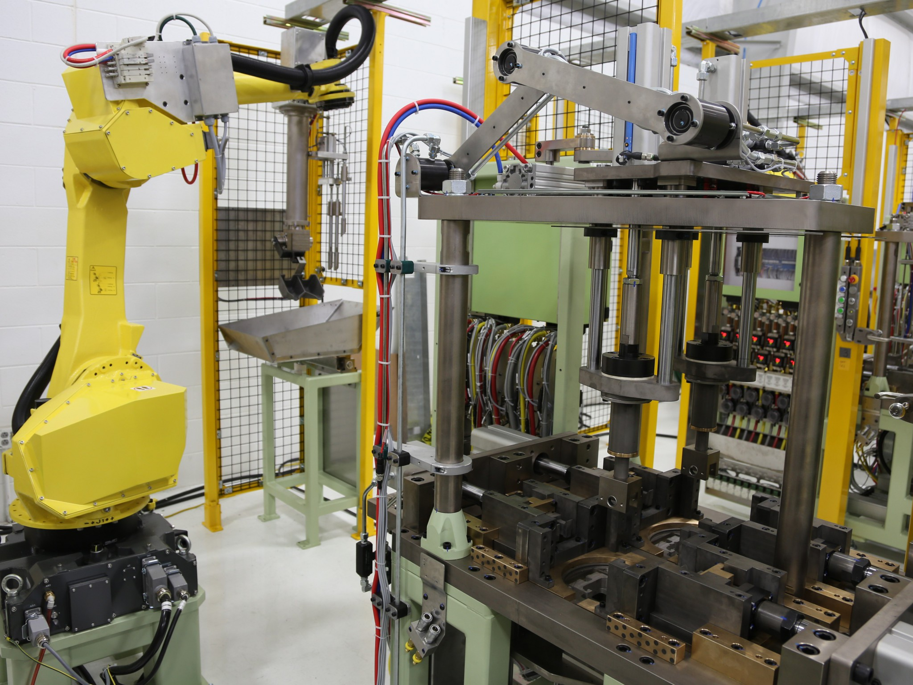
The robot on the left is used to pour molten metal into a die cast.
Design
Design Criteria
Our project is pouring the contents from one cup into another. We need to make sure that Baxter is able to identify the cups, pick up the full one, move it to the empty cup without spilling anything, then pour its contents into the empty cup before setting the newly-emptied cup down. Throughout this whole process, the cup contents should not be spilled and neither cups should be knocked over.
Our Design
Our design was to first calibrate on the height plane of the cup lid using known positions by moving a gripper holding an object around, tracking the spatial position of the gripper and the pixel coordinate of the center of the object. We can obtain the spatial position by using tf and the pixel coordinate using an object detection algorithm that will be explained in the implementation section. Using the spatial-pixel pairs we would calculate a homography matrix to get corresponding pixel to spatial mappings for objects in the plane. Using the same object detection algorithm and our new homography matrix we would then get the position of our cup to pick up and pour into another one (procedure detailed in implementation section).
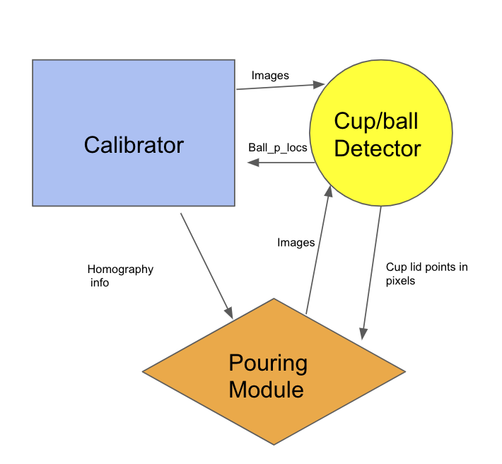
System Diagram
Design Choices Made
Homography
We had to figure out a way to map the 2D coordinates from a camera feed to the 3D coordinates of Baxter’s arm positions. We were debating between using AR tags on the table or cups to find their locations and our current method, but we chose to have Baxter move around an object as described above. This method is more challenging and more computationally heavy than using AR tags, but we find it to be more robust for our needs. With AR tags, we would have to make sure that they are always in view, which would not only restrict our movements but also not allow us to move on with our project since we would not longer be able to accurately detect the cup or table. With our current method, we spend a lot of time calibrating since we need to run the image detection algorithm on each image, but once that’s done, we don’t have to worry about blocking any AR tags or recalibrating throughout the whole process.
Pouring
We originally chose to pour with the arm horizontal along the x-axis (pointing straight away from the body) since this way we can simply rotate the end-effector joint to pour. However, we found that sometimes Baxter would pick up the cup in a way that doesn't allow the wrist joint to rotate any more in the direction we need, making it impossible to pour with the current constraints since no motion plans would be found. We ultimately decided to start off pouring as described above, but then as Baxter continues to pour, the arm would also move up to allow for a larger range of motion, which made pouring much more robust.
How Our Design Choices Affected Meeting Our Design Criteria
The choice of procedure for homography calibration meant running computationally intensive and unreliable processing for many images. This is not an efficient process, also if the position of the camera changes, the homography has to be recalibrated.
The choice to restrict the cup position to be in only one plane - the height plane - means the object detection is not very robust.
Fixing the pouring procedure to only pouring along the x-axis means that if the environment changes, it means that we need to brute force find the exact parameters in order to have the cup pour again.
Implementation
Hardware
We used a Baxter, specifically its right arm for gripping and its left arm for its camera.
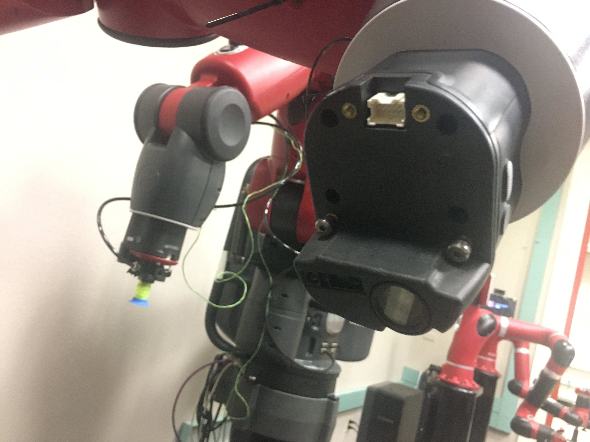
Left arm, with camera
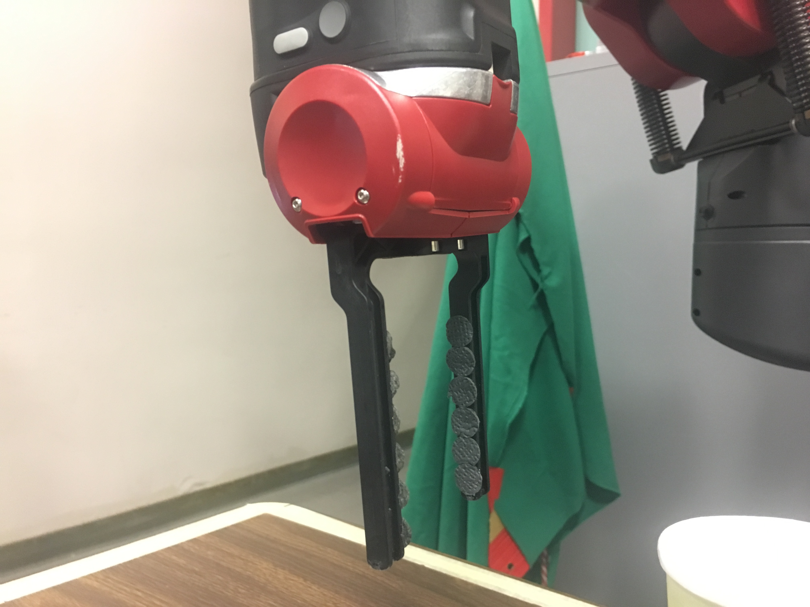
Right Arm, with gripper
Software
Image Detection Algorithm
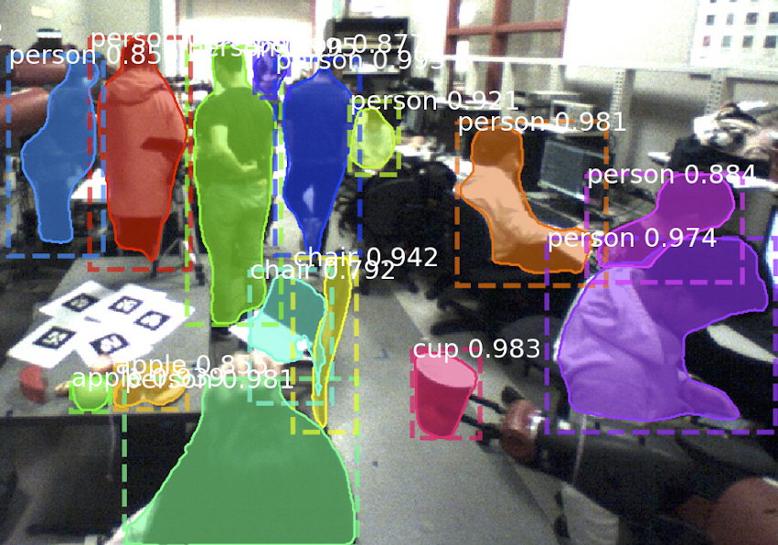
Masks found by Mask R-CNN (image taken from Baxter)
We wrote a detection algorithm for cups using Mask R-CNN and Canny edge detector and is as follows:
We first find the mask of the cup using a pre-trained model of Mask R-CNN.
We traverse the edge of the top of the mask to get the top half of the cup lip
We then use Canny edge detector to find the bottom half ot the lip
We combine the edges found from the mask and the edge detector and fit an ellipse using linear least squares regression, then store the center of the ellipse.
We computed the homography matrix using pixel-spatial coordinates pairs. We formulate the following linear system to solve and use least squares to find the optimal homography matrix:
Linear system to solve for homography matrix
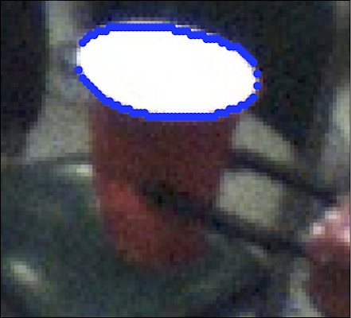
Cup with edges found from our edge detection algorithm
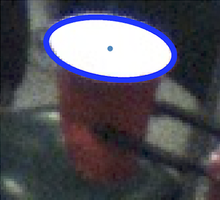
Cup with ellipse fitted using coordinates found from our algorithm
Making Baxter Pour
To make Baxter pour, we modified the path_planner.py from lab 7 to get Baxter to pour to in addition to plan for an end position and orientation, plan for joint angles. We did this so that when pouring, we could have Baxter only turn his wrist, because with end and orientation planning, sometimes small orientation changes to the end-effector, moving the whole arm could have Baxter make large sweeping motions.
The Complete System
Calibration
Demo of calibration (2x speedup)
We first make Baxter hold a ball/cup for calibration and move it around in a 2D grid near the table height. We used tf_echo to record the spatial position of the gripper and then use our object detection algorithm to detect cup/ball. Since we are using the camera on Baxter’s left arm and is susceptible to distortion and overexposure, we calibrate the camera so produce adequate images. We then use the pixel-spatial coordinate mappings to compute a homography matrix, which we will use to map pixel coordinates to spatial coordinates.
Vision
We use the camera Baxter’s left arm, in the same position as it was during the calibration phase, to take an image of the table with the two cups. Using our object detection algorithm, we fit appropriate ellipses to the lips of the cups and fit their centers. Then with our homography matrix, we map the image coordinates of the centers to their respective spatial coordinates and save them onto a file.
Pouring
The spatial coordinates of the centers of the cups from the vision phase are passed onto the pouring module, where we load the start position of our pouring action with the pouring cup and the goal position with the receiving cup. We then run our pouring action script, which will use moveit_commander to plan the path of picking up the pouring cup, moving it near the receiving cup into an orientation where it is possible to pour, pour the contents of the pouring cup into the receiving cup, and place then pouring cup back onto the table, all while holding the pouring cup in the vertical orientation so that it will not spill before getting to the pouring action.
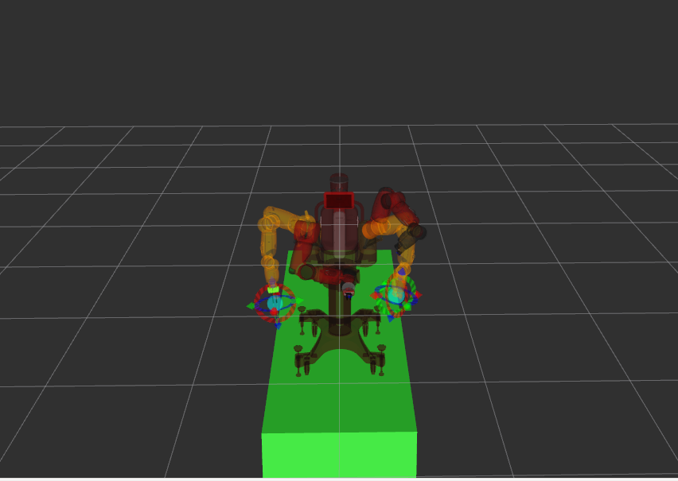
Rviz visualization (green table is set that way to avoid collisions with actual table)
Results
We were able to compute the right spatial coordinates from images if the cups were inside the area bounded by our calibration points. Given the correct spatial coordinates of the cups, Baxter is successfully able to pour from one cup to another.
Since calibration is time-consuming, we precompute our homography matrix, so we can only compute the spatial coordinates of the cups if we keep the pouring environment the same as the calibration environment (we have to keep Baxter’s left arm in the same pose at all times and the table height must be the same). If we comply to these constraints, then Baxter will pour consistently.
Video Demo
Here is a video demo of Baxter pouring:
On the screen is an image taken from Baxter's left arm with the lips of the cup found from our detection algorithm outlined. Here is a closer look at it:
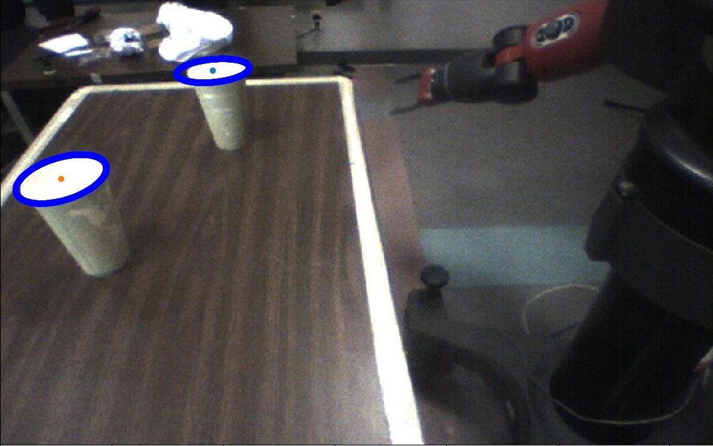
Conclusion
Our finished solution felt pretty short to our goals. The two main shortcomings were being unable to identify the cup anywhere in 3D space, the second being unable to distinguish between an unfilled and filled cup.
A hack that our solution has is that instead of using anything really complicated to do pouring, we simply have the pouring cup approach a position relative to the filling cup, the relation being fixed, and then executing a slow, end effector rotation to empty the contents into the filled cup. If we had extra time some things we would do better is instead of using single camera detection, maybe work on some multi camera detection, which would hopefully be more robust in detecting object position in 3D space.
We had played around with determining which cup is full by using the effort values from the joint_states topic, but we could not find enough evidence that effort and weight were correlated, since we could not have Baxter hold the full cup and empty cup with the same pose. Also, the difference in weight between the full cup and empty cup were not so significant that if we were to use effort values, we can be confident whether a cup is full. Vision-based approaches were out of scope since they must detect any kind of object in the full cup, including clear objects. Therefore, we relaxed the problem by having the full cup be to only the right of the empty cup.
The best improvement we could think of was a vision-based solution, but we decided was out of scope.
The calibration process and object detection were time-consuming, mostly because we were not able to utilize the instructional computers’ GPUs for Tensorflow. We had requested installation for tensorflow-gpu, but we did not hear anything back. To speed up the process, we transferred our captured images onto our own computers to process them, but even that was not efficient.
Additionally, we could not install Tensorflow onto the instructional computers so we had to set up a virtual environment. That meant we could not fully connect our pouring module with our image detection module. A hack we devised was to just save data into files in our image modules and read them in our pouring module, but we would not run both modules simultaneously so we still had to manually run separate scripts, which made testing a pain point.
The Team
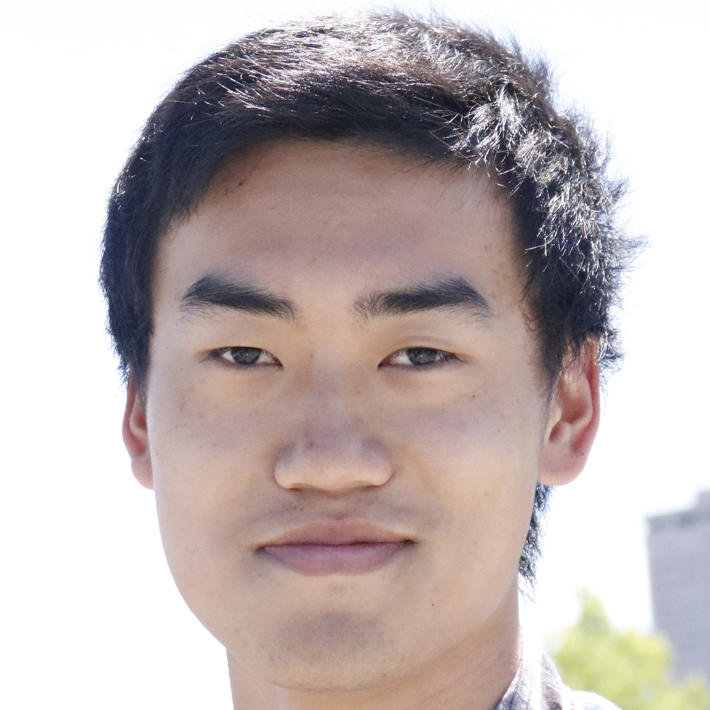
Bernie
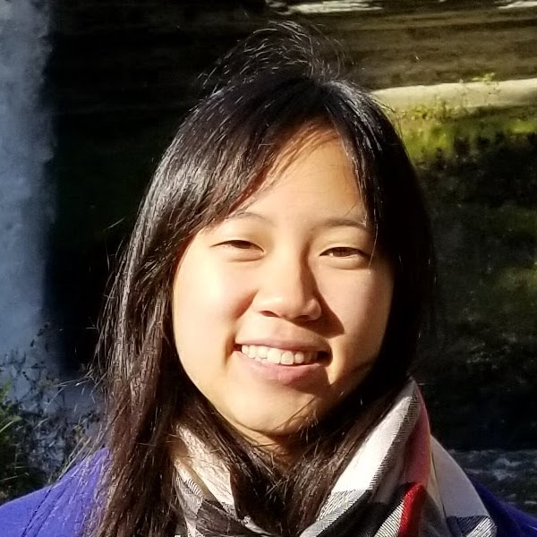
Yena
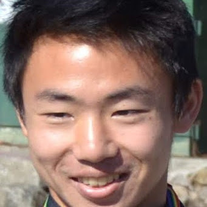
Kevin
Bernie is a 4th year EECS undergrad from San Diego. His current research involves LiDAR and autonomous driving. His interests are in the field of computer vision and machine learning. Bernie worked on the vision algorithms - object detection and edge detection - as well as part of the pouring path planning.
Yena is a 4th year EECS undergrad from Daly City. She worked on object detection, computing pixel-to-spatial coordinates, edge detection, and pouring path planning.
Kevin is 4th year EECS undergrad from San Diego. He is responsible for implementing cup manipulation and the calibration procedure with Baxter, its arms, and its cameras. In his free time he likes to run and competes in marathons.